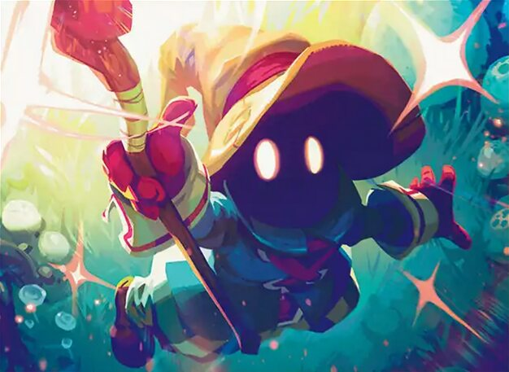
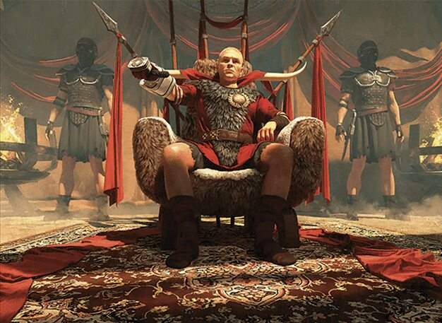

Yuriko, the Tiger's Shadow
Solides Mittelfeld
Das Deck gewinnt 21 % seiner Partien – der Schnitt am Vierertisch liegt bei 25 %.
- Stufe · Elo
- B 1488 Platz 31 von 64 in der Rangliste bis 500 €
- Siegquote
- 21 % 73 Siege in 356 Partien, mit 90 % Sicherheit zwischen 17 und 24 %
- Platzierungen
- 115 %6×
- 242 %17×
- 328 %11×
- 415 %6×
Dort ein neues Deck anlegen und die Liste beim Import einfügen.
- Preis
- 475,17 €von 500,00 €
- Partien
- 410in 41 Turnieren, 54 am Zeitlimit nicht gewertet
- Karten
- 10032 Länder, davon 16 Standard
- Game Changer
- 3höchstens 3 erlaubt
- Kombos
- 1komplett im Deck
- Regelcheck
- Bestanden100 Karten, Farben, Bannliste
Höchstens 500 € inklusive Commander. Steigen die Preise darüber, wird die Kaufliste automatisch neu gebaut.
Stärken und Schwächen
Aus 326 ausgewerteten Partien in 38 Turnieren (mit den Listen, die im Turnier gespielt wurden). Partien am Zeitlimit zählen wie in der Rangliste nicht. Werte in Klammern: Schnitt aller Decks derselben Preisklasse. Die genauen Zahlen siehst du, wenn du mit der Maus auf einen Punkt zeigst oder ihn antippst.
Spielweise: gewinnt über den Kampf – 100 % des Schadens an Gegnern ist Kampfschaden · So gewinnt es: 45 % der Siege durch Überleben – die Gegner schalteten sich gegenseitig aus (Schnitt aller Decks: 32 %)
Stärken
- Gewinnt auch ohne Commander sicher38 % Siege in Partien, in denen er nie kam · 85 Partien ohne, 241 mit Commander
Schwächen
- Wenig Druck sichernur Ø 18 Schaden an Gegnern je Partie (Schnitt aller Decks: 29) · 326 Partien
- Schaltet selten Gegner aus sicherim Schnitt 0,44 je Partie (Schnitt aller Decks: 0,62) · 326 Partien
Gegen wen es gewinnt
Siegquote an Tischen, an denen dieser Commander mitspielte – nur Gegner aus der aktuellen Rangliste mit mindestens 20 gemeinsamen Partien. Am Vierertisch liegt der Schnitt bei 25 %.
Gewinnt oft gegen

42 %von 24 39 %von 23
39 %von 23
35 %von 20
Tut sich schwer gegen
 0 %von 21
0 %von 21 4 %von 23
4 %von 23 12 %von 26
12 %von 26
Spielstil
KartenvorteilZauberspruch-Deck
Automatisch aus der Deckliste: wofür die Karten da sind, verglichen mit allen getesteten Decks. 80 % heißt: mehr davon als 80 % aller Decks.
Mit einem anderen Commander vergleichen
Commander (1)
Kreaturen (33)
- Sakashima's Student21,35 €
- Thassa's OracleGame ChangerKombo13,33 €
- Baleful Strix Kartenziehen7,00 €
- Fallen Shinobi5,46 €
- Mockingbird4,22 €
- Mist-Syndicate Naga2,74 €
- Higure, the Still Wind2,72 €
- Silent-Blade Oni2,01 €
- Nashi, Moon Sage's Scion1,76 €
- Thousand-Faced Shadow1,74 €
- Hydroelectric Specimen // Hydroelectric Laboratory1,08 €
- Ninja of the Deep Hours Kartenziehen1,08 €
- Ingenious Infiltrator KartenziehenKI schwach1,05 €
- Throat Slitter Removal1,04 €
- Satoru, the Infiltrator Kartenziehen0,85 €
- Changeling Outcast0,76 €
- Mistblade Shinobi Removal0,63 €
- Shadow of Mortality0,60 €
- Mothdust Changeling0,50 €
- Faerie Seer0,49 €
- Slither Blade0,31 €
- Triton Shorestalker0,28 €
- Ingenious Prodigy Kartenziehen0,23 €
- Ornithopter0,22 €
- Gingerbrute0,21 €
- Prosperous Thief Ramp0,20 €
- Silver-Fur Master0,20 €
- Moon-Circuit Hacker Kartenziehen0,19 €
- Wingcrafter0,18 €
- Skullsnatcher0,17 €
- Azra Smokeshaper Schutz0,13 €
- Spectral Sailor Kartenziehen0,09 €
- Tetsuko Umezawa, Fugitive0,07 €
Planeswalker (1)
- Kaito, Bane of Nightmares Kartenziehen11,77 €
Spontanzauber (21)
- Deadly Rollick Removal25,49 €
- MisdirectionKI kann nicht10,66 €
- Mystical TutorGame ChangerKI schwach10,44 €
- Force of Despair Board Wipe8,50 €
- Snuff Out Removal7,79 €
- Sink into Stupor // Soporific Springs7,03 €
- Demonic ConsultationKomboKI kann nicht6,87 €
- Mindbreak TrapKI kann nicht6,46 €
- Mental Misstep Removal6,20 €
- Fell the Profane // Fell Mire Removal3,98 €
- Flare of Denial Removal3,85 €
- Flusterstorm Removal3,84 €
- Lim-Dûl's VaultKI kann nicht3,69 €
- An Offer You Can't Refuse Removal3,22 €
- Flare of Malice Removal3,15 €
- Dismember Removal2,69 €
- CommandeerKI kann nicht1,69 €
- Dark Ritual1,55 €
- Counterspell Removal0,97 €
- Brainstorm Kartenziehen0,81 €
- Dig Through Time0,20 €
Hexereien (3)
- Temporal Trespass3,81 €
- Ponder Kartenziehen2,11 €
- Treasure Cruise Kartenziehen0,15 €
Artefakte (7)
- Mox Amber Ramp61,08 €
- Lotus Petal RampKI schwach24,59 €
- Sensei's Divining Top Kartenziehen20,74 €
- Sol Ring Ramp0,74 €
- Talisman of Dominance Ramp0,51 €
- Dimir Signet Ramp0,41 €
- Arcane Signet Ramp0,36 €
Verzauberungen (2)
- Rhystic Study KartenziehenGame Changer38,17 €
- Mystic Remora KartenziehenKI schwach9,24 €
Länder (32)
- Otawara, Soaring City24,62 €
- Polluted Delta18,62 €
- Bloodstained Mire16,99 €
- Flooded Strand15,10 €
- Morphic Pool10,01 €
- City of Brass8,68 €
- Watery Grave7,64 €
- Shipwreck Marsh1,67 €
- Reliquary Tower1,62 €
- Underground River0,82 €
- Drowned Catacomb0,57 €
- Rogue's Passage0,25 €
- Choked Estuary0,23 €
- Sunken Hollow0,23 €
- Exotic Orchard0,19 €
- Command Tower0,18 €
- 6× Swamp
- 10× Island
Welche Karten Siege bringen
Aus 326 Partien dieses Decks (Schnitt 20 % Siege): Wie oft es gewonnen hat, wenn die Karte in der Partie gespielt wurde – verglichen mit den anderen gespielten Karten des Decks. 0 = normal, Plus = bringt mehr Siege. Nur Karten, die mindestens 20-mal gespielt wurden. Teure Karten, die spät kommen, sehen oft etwas besser aus, weil man dafür lange genug überleben muss.
| Karte | Partien | Siege, wenn gespielt | gegenüber den anderen Karten |
|---|---|---|---|
| Ingenious Prodigy | 52 | 35 % | +10 |
| Mystic Remora | 53 | 34 % | +10 |
| Sink into Stupor | 60 | 33 % | +9 |
| Changeling Outcast | 70 | 33 % | +9 |
| Wingcrafter | 75 | 32 % | +8 |
| Flusterstorm | 26 | 31 % | +6 |
| Baleful Strix | 40 | 30 % | +6 |
| Deadly Rollick | 54 | 30 % | +5 |
| Temporal Trespass | 96 | 29 % | +5 |
| Ornithopter | 90 | 29 % | +5 |
Alle 59 Karten zeigen
Upgrade auf bis 1.000 €
Du hast dieses Deck bis 500 €? Das getestete Deck bis 1.000 € spielt diese Karten anders – oben die, mit denen es am häufigsten gewinnt.
11 Karten anders · +492,09 € · Platz 31 → Platz 42
- Force of Negation48,70 €
- Underground Sea280,00 €
- Vampiric Tutor40,57 €
- Scalding Tarn28,76 €
- Sea Gate Restoration // Sea Gate, Reborn28,06 €
- Misty Rainforest26,11 €
- Marsh Flats25,09 €
- Verdant Catacombs24,98 €
- Shizo, Death's Storehouse11,73 €
- Ink-Eyes, Servant of Oni8,00 €
- Dauthi Voidwalker5,28 €
Dafür raus (11)
Choked Estuary, City of Brass, Demonic Consultation, Exotic Orchard, Hydroelectric Specimen // Hydroelectric Laboratory, Ingenious Prodigy, Reliquary Tower, Rogue's Passage, Shipwreck Marsh, Thassa's Oracle, Throat Slitter
Starthand ziehen
Sieben zufällige Karten aus diesem Deck – so siehst du, wie sich der Start anfühlt. Der Commander liegt wie im Spiel nicht im Stapel.
Kombos im Deck (1)
Laut Commander Spellbook mit dieser Kartenliste möglich. Was eine Kombo genau braucht, steht dort. Ob eine Kombo in Partien wirklich zusammenkam, steht im Reiter „Partien“.
- Demonic Consultation + Thassa's Oracle → Deine Bibliothek ins Exil, Du gewinnst das Spiel
Für die Forge-KI angepasst
Die Liste oben ist die beste getestete Fassung, so wie du sie in echten Partien spielen würdest. Ein paar Karten kann die Forge-KI nicht spielen – sie wurden im Turnier durch andere ersetzt (dabei baut der Deckbauer im Budget auch andere Plätze um). Die Siegquote stammt aus Partien mit diesen Ersatzkarten; die Originalkarten selbst sind nicht von der KI getestet.
- Choked Estuary: Ausgleich für eine andere ersetzte Karte
- Commandeer: KI kann sie nicht spielen
- Demonic Consultation: KI kann sie nicht spielen
- Hydroelectric Specimen // Hydroelectric Laboratory: für einen Test getauscht
- Lim-Dûl's Vault: KI kann sie nicht spielen
- Mindbreak Trap: KI kann sie nicht spielen
- Misdirection: KI kann sie nicht spielen
- Reliquary Tower: Ausgleich für eine andere ersetzte Karte
- Sensei's Divining Top: Ausgleich für eine andere ersetzte Karte
- Thassa's Oracle: Ausgleich für eine andere ersetzte Karte
- Throat Slitter: Ausgleich für eine andere ersetzte Karte
- Boggart Trawler // Boggart Bog: Ersatz
- Dauthi Voidwalker: Ersatz
- Ink-Eyes, Servant of Oni: Ersatz
- Mist-Cloaked Herald: Test
- Preordain: Ersatz
- Satoru Umezawa: Ersatz
- Scalding Tarn: Ersatz
- Shizo, Death's Storehouse: Ersatz
- Smoke Shroud: Ersatz
- Submerge: Ersatz
- Universal Automaton: Ersatz
Die Partien in Zahlen
- Commander gewirkt
- 100 %der Partien, in 40 % bis zum 4. Zug
- Schaden je Partie
- 18Schnitt: 29
- Siege im Schnitt
- Zug 11,5eigener Zug, Schnitt: 11,5
- Als Erstes ausgeschieden
- 30 %99 von 326 Partien, Schnitt: 25 %
- Zu wenig Länder
- 7 %der Partien, davon 4 gewonnen, Schnitt: 9 %
- Mulligans
- 11 %36 in 326 Partien, Schnitt: 7 %
Karten mit messbarem Einfluss
Ein Zusammenhang, kein Beweis: Diese Karten kamen in Siegen deutlich öfter ins Spiel.
- Changeling Outcast – gewonnen in 33 % der Partien, in denen sie gewirkt wurde (70), sonst 16 %
- Wingcrafter – gewonnen in 32 % der Partien, in denen sie gewirkt wurde (75), sonst 16 %
- Ingenious Prodigy – gewonnen in 35 % der Partien, in denen sie gewirkt wurde (52), sonst 17 %
Was die Partien zeigen
Aus 326 ausgewerteten Partien in 38 Turnieren (mit den Listen, die im Turnier gespielt wurden). Partien am Zeitlimit zählen wie in der Rangliste nicht. Werte in Klammern: Schnitt aller Decks derselben Preisklasse. „sicher“: steht so im Spielprotokoll. „Hinweis“: kommt immer wieder vor, ist aber kein Beweis.
Schaden pro Partie alle Partien
Schaden an Gegnern pro Partie, gerechnet über alle 326 Partien – was die Karte insgesamt beiträgt
- Yuriko, the Tiger's Shadow Ø 1,9traf in 250 von 326 Partien
- Silent-Blade Oni Ø 1,7traf in 60 von 326 Partien
- Ink-Eyes, Servant of Oni Ø 1,2traf in 44 von 326 Partien
Schaden bei Einsatz wenn sie trifft
Gesamtschaden ÷ Partien, in denen die Karte Schaden gemacht hat – ihre Stärke im Einsatz
- Shadow of Mortality Ø 10,9traf in 14 von 326 Partien
- Silent-Blade Oni Ø 9,2traf in 60 von 326 Partien
- Ink-Eyes, Servant of Oni Ø 9,2traf in 44 von 326 Partien
Top-Finisher schaltet Gegner aus
Karten, die am häufigsten einen gegnerischen Commander aus der Partie genommen haben
- Silent-Blade Oni 20×326 Partien im Deck
- Ink-Eyes, Servant of Oni 13×326 Partien im Deck
- Mist-Syndicate Naga 11×326 Partien im Deck
Beste Interaktion räumt auf
Gegnerkarten, die beim Auflösen dieser Karte zerstört, verbannt, zurückgeschickt oder neutralisiert wurden (ohne Spielsteine)
- Flare of Malice 160×Ø 0,5 pro Partie · 313 Partien im Deck
- Snuff Out 64×Ø 0,2 pro Partie · 326 Partien im Deck
- Force of Despair 54×Ø 0,2 pro Partie · 326 Partien im Deck
Größte Hindernisse blockt am meisten
Gegnerische Karten, die die Angreifer dieses Decks am häufigsten geblockt haben – insgesamt 12 % der 3319 Angreifer geblockt, davon 11 % durch Flieger oder Reichweite
- Goblin Token 11×blockte in 4 Partien
- Soldier Token 9×blockte in 6 Partien
- Ms. Bumbleflower 7×blockte in 5 Partien
Selten gewirkt Kandidaten zum Tauschen
Karten dieser Liste, die in ihren Partien am seltensten gewirkt wurden – oft zu teuer oder zu langsam (Länder ausgenommen)
- Kaito, Bane of Nightmares 7 %gewirkt in 24 von 326 Partien
- Mental Misstep 7 %gewirkt in 24 von 326 Partien
- Flusterstorm 8 %gewirkt in 26 von 326 Partien
Siege nach Zug Tempo
In welchem eigenen Zug die 65 Siege kamen
- bis Zug 72 %
- Zug 8–918 %
- Zug 10–1131 %
- Zug 12–1335 %
- ab Zug 1414 %
Kombos im Spiel sicher Demonic Consultation + Thassa's Oracle: alle Teile gewirkt in 0 Partien, davon 0 gewonnen
Elo-Verlauf
Elo nach jedem Turnier, älteste links. Gestrichelt: Stufengrenzen S, A, B, C.
Jetzt 1488, am höchsten 1522 (13.11.), am niedrigsten 1381 – aus 41 Turnieren.
Letzte Partien
Platz in jeder Partie zu viert, älteste links: Gold = Sieg, Silber = 2, Bronze = 3, rot = 4, Ring = Remis.
2343222122444322113321213333332212222424In den letzten 40 Partien 6× Sieg, 17× Platz 2, 11× Platz 3 und 6× Platz 4.
Manakurve ohne Länder
Durchschnitt 2,87
Aufgaben im Deck
Anzahl / Richtwert aus dem EDHREC-Durchschnittsdeck (der Strich), rot heißt deutlich darunter. Strategie: die übrigen Karten ohne eine dieser Aufgaben, etwa die Kreaturen und Effekte, um die sich das Deck dreht. Zusammen 67 Karten ohne Länder.
Kartentypen
- Kreaturen33 %33
- Planeswalker1 %1
- Spontanzauber21 %21
- Hexereien3 %3
- Artefakte7 %7
- Verzauberungen2 %2
- Länder32 %32
Teuerste Karten
Was das Programm gelernt hat
In jedem Turnier testet das Deck eine Karte. Ein Urteil gibt es erst ab 40 Partien mit und ohne die Karte. Weil das Deck jedes Turnier mit aktuellen Preisen und Daten neu gebaut wird, können getestete Karten später wieder herausfallen.
- besser Preordain statt Kaito Shizuki · Siegquote 26 % mit, 13 % ohne (207 / 149 Partien) · aus einer früheren Fassung, heute nicht im Deck
- besser Mist-Cloaked Herald statt Gingerbrute · Siegquote 27 % mit, 15 % ohne (169 / 187 Partien)
- besser Boggart Trawler // Boggart Bog statt Dauthi Voidwalker · Siegquote 29 % mit, 18 % ohne (76 / 280 Partien) · aus einer früheren Fassung, heute nicht im Deck
- besser Satoru Umezawa statt Gingerbrute · Siegquote 25 % mit, 15 % ohne (186 / 170 Partien)
- schlechter Kaito Shizuki statt Kaito, Cunning Infiltrator · Siegquote 13 % mit, 25 % ohne (135 / 221 Partien) · aus einer früheren Fassung, heute nicht im Deck
- schlechter Throat Slitter statt Flare of Malice · Siegquote 16 % mit, 28 % ohne (224 / 132 Partien)
- kein klarer Unterschied Street Wraith statt Preordain · Siegquote 18 % mit, 26 % ohne (260 / 96 Partien) · aus einer früheren Fassung, heute nicht im Deck
- kein klarer Unterschied Dokuchi Silencer statt Flare of Malice · Siegquote 18 % mit, 22 % ohne (173 / 183 Partien)
3 weitere getestete Karten sammeln noch Partien.
Kaufliste für Cardmarket
Liste kopieren, auf Cardmarket unter „Wants“ eine neue Liste anlegen und einfügen.
Zusammen 475,17 € Cardmarket-Durchschnitt vom 24.11.2026
Cardmarket Wants öffnenPreise ohne Versand. Einzelne Karten können bei Cardmarket inzwischen teurer oder günstiger sein.
Gespielt von der Forge-KI, zu viert. Ein durchschnittliches Deck gewinnt 25 %. Wie wird getestet?